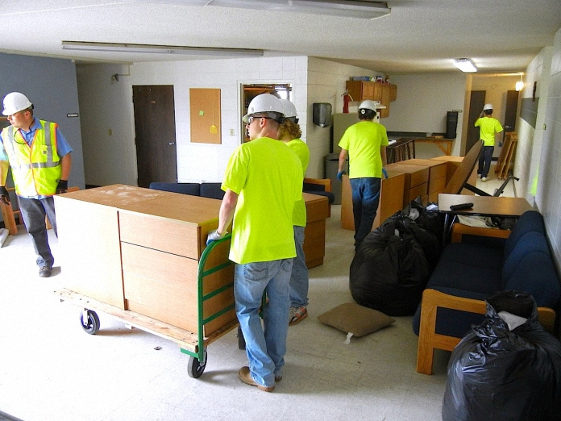

الكلمات المفتاحية:
أفضل شركة نقل مكاتب جدة بأسعار تنافسية وخدمة 24 ساعة لنقل الشركات
تعتبر شركة نقل عفش جدة القصر السعودي من أفضل الشركات المتخصصة في مجال نقل مكاتب جدة، حيث نمتلك خبرة طويلة تصل إلى أكثر من 15 عاماً في تقديم خدمات نقل الأثاث المكتبي بكافة أنواعه. نحن أفضل شركة نقل عفش جدة بفضل سمعتنا الممتازة وخدماتنا المتميزة في نقل المكاتب والشركات. سواء كنت تدير شركة صغيرة أو مؤسسة كبرى، فإن نقل مكتبك يتطلب تخطيطاً دقيقاً وفريقاً متخصصاً يفهم طبيعة الأثاث المكتبي والأجهزة الإلكترونية الحساسة. نحن في شركة القصر السعودي ندرك أن وقت العمل هو ثروة، ولذلك نعمل خارج أوقات الدوام الرسمي لضمان عدم تعطيل عملك. نقدم خدمات نقل شركات جدة بشكل متكامل يبدأ من التغليف والفك وصولاً إلى النقل والتركيب في المقر الجديد. نفخر بأننا شركة نقل مكاتب جدة الأولى في مجال نقل الأثاث المكتبي، حيث نستخدم أحدث السيارات المجهزة بأنظمة تثبيت متطورة تحمي المكاتب والكراسي والأجهزة من أي اهتزازات. فريقنا من الفنيين المتخصصين في فك وتركيب المكاتب يخضع لدورات تدريبية مستمرة على أحدث أنواع الأثاث المكتبي، بما في ذلك المكاتب القابلة للتفكيك والأثاث ذي التصميمات المعقدة. كما نقدم خدمة تغليف احترافية باستخدام مواد عالية الجودة لحماية أجهزة الكمبيوتر والطابعات والخوادم من الغبار والصدمات. نحن نضمن لك نقل مكتبك بأمان تام وفي الوقت المحدد، مع التزام كامل بالجدول الزمني المتفق عليه. سواء كنت تنقل مكتبك داخل نفس الحي في جدة أو إلى مدينة أخرى، فإن فريقنا جاهز لخدمتك على مدار الساعة. أفضل شركة نقل عفش جدة تنتظر اتصالك لتجعل عملية نقل شركتك تجربة سلسة وخالية من المتاعب. يمكنكم أيضاً زيارة مدونتنا للاطلاع على مقالات مفيدة حول نقل المكاتب والشركات.

ملخص سريع لخدمة نقل المكاتب:
نحن نقدم خدمة نقل مكاتب جدة بشروط ممتازة: خبرة 15 عاماً، عمالة مدربة، سيارات مجهزة، التزام بالمواعيد، وتغطية لجميع أحياء جدة. أفضل شركة نقل عفش جدة والمكاتب تنتظر اتصالك لخدمة شركتك.
خدمات نقل مكاتب جدة المتكاملة للشركات والمؤسسات
نقل مكاتب داخل جدة – نقل سريع وآمن للشركات
نحن متخصصون في نقل مكاتب داخل جدة بين مختلف أحياء المدينة التجارية. سواء كنت تنتقل من برج إلى آخر، أو من منطقة إلى منطقة أخرى داخل جدة، فإننا نضمن لك خدمة سريعة وآمنة لشركتك. نعرف طرق جدة جيداً ونتعامل مع ازدحامات الطرق بذكاء لنصل في الوقت المحدد دون تأخير. خدماتنا تشمل جميع مراحل نقل المكاتب من الباب إلى الباب، مع اهتمام خاص بنقل الأجهزة الإلكترونية والملفات الهامة. نقل مكاتب داخل جدة معنا يعني راحة بال لرجال الأعمال، حيث نقدم ضماناً على جميع محتويات مكتبك. نستخدم سيارات مجهزة خصيصاً لنقل الأثاث المكتبي، مع أنظمة تثبيت حديثة تمنع تحرك المكاتب والكراسي أثناء النقل. كما نوفر خدمة تفكيك وتركيب المكاتب الكبيرة مثل مكاتب المديرين والمكاتب التنفيذية التي تحتوي على أدراج وأجزاء معقدة. فريقنا يضع ملصقات على كل قطعة لتسهيل إعادة التركيب في المقر الجديد بنفس الترتيب. نعمل خارج أوقات الدوام الرسمي (في المساء أو خلال عطلات نهاية الأسبوع) لضمان عدم تعطيل سير العمل في شركتك. هذا النهج جعلنا شركة نقل مكاتب جدة المفضلة لدى العديد من الشركات والمؤسسات في المدينة. نحن ندرك أن كل دقيقة توقف عن العمل قد تكلف شركتك الكثير، ولذلك نخطط لكل خطوة بدقة متناهية. نقدم أيضاً خدمة نقل الخوادم وأجهزة الشبكات الحساسة باستخدام صناديق مضادة للصدمات والاهتزازات، مع فريق متخصص في التعامل مع المعدات التقنية. إذا كنت تبحث عن نقل عفش جدة لشركتك بأعلى معايير الأمان والسرعة، فإن القصر السعودي هو خيارك الأمثل. اتصل بنا اليوم للحصول على خطة نقل مفصلة لمكتبك داخل جدة، مع عرض سعر شفاف وبدون أي رسوم خفية.

نقل مكاتب من جدة إلى المدن الأخرى – نقل آمن لمسافات طويلة
نقدم خدمة نقل مكاتب من جدة إلى المدن الأخرى مثل الرياض، الدمام، مكة، المدينة المنورة، أبها، وجميع مدن المملكة. إذا كانت شركتك تنتقل إلى مدينة أخرى أو تفتح فرعاً جديداً، فإننا نوفر لك حلول نقل متكاملة تشمل تغليفاً احترافياً وفكاً وتركيباً آمناً. نستخدم شاحنات مغلقة ومجهزة للرحلات الطويلة مع فريقين من السائقين المناوبين لضمان وصول الأثاث المكتبي بأمان وسرعة. نقل مكاتب من جدة الى الرياض أو أي مدينة أخرى يتم باحترافية عالية، حيث نحرص على أن تصل الأجهزة الإلكترونية والوثائق الهامة بحالة ممتازة. نقدم خدمة تتبع الشحنات عبر نظام GPS، ويمكنك متابعة رحلة أثاث مكتبك لحظة بلحظة. جميع عمليات النقل بين المدن تشمل تغليفاً مزدوجاً للأجهزة الحساسة، وتأميناً شاملاً ضد أي حوادث أو تلفيات غير متوقعة. فريقنا لديه خبرة واسعة في التعامل مع المكاتب الكبيرة التي تحتوي على خوادم وأجهزة اتصالات، ونستخدم مواد تغليف خاصة عازلة للكهرباء الساكنة لحماية المعدات الإلكترونية. عند الوصول إلى المدينة المستهدفة، نقوم بتفريغ الأثاث وتركيبه في المقر الجديد حسب المخطط المتفق عليه مع إدارتك. نضمن لك أن تستأنف شركتك عملها في اليوم التالي دون أي تأخير. سواء كنت تنقل مكتب فرعي صغير أو مقر شركة كامل، فإن إمكانياتنا تسمح لنا بتلبية جميع احتياجاتك. شركة نقل عفش جدة القصر السعودي هي شريكك الموثوق في نقل المكاتب بين المدن، مع ضمان الكفاءة والسرعة والأمان. يمكنكم الاطلاع على سيارات نقل العفش في جدة لمعرفة المزيد عن أسطولنا المجهز.

فك وتركيب الأثاث المكتبي – خدمة احترافية للمكاتب والشركات
نقدم خدمة فك وتركيب الأثاث المكتبي في جدة بواسطة فريق متخصص مدرب على أعلى مستوى. نقوم بفك جميع أنواع الأثاث المكتبي: مكاتب المديرين، مكاتب الموظفين، الكراسي المكتبية، رفوف التخزين، خزائن الملفات، وأثاث غرف الاجتماعات، مع ترقيم جميع القطع ووضع ملصقات لتسهيل عملية إعادة التركيب. فك وتركيب مكاتب احترافي يضمن سلامة قطعك المكتبية الثمينة ويوفر الوقت والجهد. نستخدم أدوات خاصة غير حادة على الأسطح الخشبية والمعدنية، ونحرص على تجميع جميع المسامير والبراغي في أكياس مغلقة مكتوب عليها مكانها الأصلي. هذا التنظيم الدقيق يجعل إعادة التركيب سريعة وسهلة. فريقنا من الفنيين لديه خبرة في التعامل مع جميع الماركات العالمية للأثاث المكتبي، بما في ذلك الأثاث القابل للتعديل والأثاث ذي الأنظمة الإلكترونية. نقدم خدمة فك وتركيب مكاتب الشركات خارج أوقات الدوام الرسمي، حتى لا نعطل سير العمل. بعد الانتهاء من النقل، نقوم بإعادة تركيب الأثاث في المقر الجديد بنفس الترتيب والتنظيم، مع التأكد من ثبات كل قطعة ومحاذاتها بشكل صحيح. كما نقدم خدمة تنظيف شاملة للأثاث بعد التركيب وإزالة جميع مواد التغليف والفضلات. إذا كان لديك أثاث مكتبي معقد مثل المكاتب الزاوية أو المكاتب ذات الأدراج المتعددة، فإن فريقنا يمتلك الخبرة اللازمة لتفكيكها وإعادة تركيبها بدون أي أخطاء. أفضل شركة نقل عفش جدة تقدم هذه الخدمة بأسعار تنافسية وضمان شامل على جميع أعمال الفك والتركيب لمدة 30 يوماً. يمكنكم أيضاً قراءة المزيد عن فك وتركيب الأثاث في جدة.

تغليف الأثاث المكتبي – حماية فائقة للأجهزة والمكاتب
نستخدم أفضل مواد تغليف الأثاث المكتبي في جدة لحماية محتويات مكتبك: بلاستيك فقاعي عالي الكثافة، كراتين مقواة مزدوجة السمك، أغطية قماشية واقية من الغبار، وصناديق خشبية مخصصة للخوادم والأجهزة الحساسة. تغليف مكاتب احترافي يضمن وصول الأثاث والأجهزة بحالة ممتازة بدون خدوش أو كسور. ندرك أن المكاتب تحتوي على أجهزة إلكترونية حساسة مثل أجهزة الكمبيوتر والطابعات والخوادم وأجهزة الاتصالات، ولذلك نستخدم صناديق مضادة للصدمات والاهتزازات ومبطنة من الداخل بمواد عازلة. عملية التغليف تبدأ بتفقد كل قطعة وتسجيل حالتها قبل التغليف، ثم نصنف الأثاث حسب حجمه وحساسيته. نلف المكاتب الكبيرة بطبقتين من البلاستيك الفقاعي ثم غطاء قماشي خارجي، ونضع زوايا بلاستيكية على الأرجل والزوايا الحادة. أما الأجهزة الإلكترونية، فنستخدم صناديق فردية لكل جهاز مع رغوة عازلة من الداخل. هذه الخدمة تجعلنا شركة نقل مكاتب جدة المفضلة لدى الشركات التي تمتلك أجهزة حساسة وبيانات هامة. جميع مواد التغليف التي نستخدمها صديقة للبيئة وقابلة لإعادة التدوير، ونحرص على استخدام مواد غير ضارة بالصحة. فريقنا مدرب على أسرع تقنيات التغليف التي توفر الوقت مع الحفاظ على الجودة العالية. نقدم عروضاً خاصة على خدمات التغليف الشامل عند حجز خدمة نقل مكتبك بالكامل. إذا كنت تخطط لنقل شركتك داخل أو خارج جدة، فلا تتردد في الاتصال بنا للحصول على استشارة مجانية حول أفضل مواد وطرق تغليف تناسب أثاث مكتبك وأجهزتك. نضمن لك وصول جميع محتويات مكتبك بحالة ممتازة، خالية من أي خدوش أو كسور. يمكنكم أيضاً قراءة المزيد عن تغليف الأثاث في جدة.

نقل مكاتب وشركات بجدة – حلول متكاملة للأعمال
نقدم خدمة خدمات نقل الفلل والشقق والمكاتب الشاملة بأعلى مستويات الاحترافية، سواء كنت تنقل مقر شركة صغيرة أو مؤسسة كبيرة أو مكتب فرعي. نحن ندرك أن كل شركة لديها احتياجات مختلفة، ولذلك نقدم خدمات مخصصة تناسب حجم المنشأة ونوع الأثاث والأجهزة. تشمل خدماتنا نقل المكاتب التنفيذية، مكاتب الموظفين، غرف الاجتماعات، غرف الخوادم، والمستودعات. فريقنا المدرب قادر على التعامل مع جميع الأحجام والأنواع، بدءاً من نقل كرسي مكتب واحد إلى نقل مقر شركة كامل يحتوي على مئات القطع. نضمن لك نقل آمن وسريع مع الاهتمام بكل التفاصيل الصغيرة، مثل ترتيب الكابلات والأسلاك بعد النقل، ووضع علامات واضحة على الصناديق لتسهيل عملية الفتح والترتيب. نقدم أيضاً خدمة النقل المتدرج للشركات الكبيرة التي لا يمكنها إيقاف العمل تماماً، حيث ننقل جزءاً من المكاتب في كل مرة مع تشغيل العمل من الموقعين القديم والجديد بالتوازي. هذه الخدمة مثالية للشركات التي تعمل في مجالات حساسة مثل البنوك وشركات الاتصالات ومراكز البيانات. نستخدم سيارات نقل بأحجام مختلفة تناسب جميع كميات الأثاث، من دينات صغيرة للمكاتب الصغيرة إلى شاحنات كبيرة لنقل المكاتب الكبيرة. فريقنا جاهز لتقديم عرض سعر تنافسي لنقل أي حجم من المكاتب، مع زيارة ميدانية مجانية لتقييم الموقع ووضع خطة نقل مفصلة. نقل عفش جدة للشركات مع القصر السعودي يعني راحة البال والتركيز على عملك بينما نعمل نحن على نقل مقرك بأمان.
نقل مكاتب باستخدام ونش – رفع الأثاث المكتبي الثقيل بسهولة
للمكاتب التي تقع في الأدوار العليا والتي لا تتوفر فيها مصاعد كبيرة تسمح بمرور الأثاث المكتبي الثقيل، نوفر خدمة نقل مكاتب باستخدام ونش لرفع الأثاث الثقيل مثل خزائن الملفات الكبيرة، مكاتب المديرين الثقيلة، وماكينات التصوير الكبيرة، بسهولة وأمان. ونش رفع عفش متطور يتعامل مع جميع أنواع الأثاث المكتبي دون أي ضرر للمبنى أو الأثاث. نستخدم أوناش كهربائية وهيدروليكية حديثة يمكن التحكم بها عن بعد لضمان رفع دقيق وآمن. هذه الخدمة مثالية للمكاتب في الأبراج التجارية التي يصعب الوصول إليها عبر السلالم أو المصاعد العادية. قبل البدء في عملية الرفع، يقوم فريقنا بتقييم الموقع والتأكد من وجود مساحة كافية لوضع الونش وأن جميع إجراءات السلامة متبعة. نستخدم أحزمة خاصة لتوزيع الوزن بشكل متساوٍ على الأثاث، ونغطي القطع بطبقات من البلاستيك الفقاعي لحمايتها أثناء الرفع. خدمة الونش متاحة 24 ساعة، ويمكننا توفيرها في أي وقت يناسب جدول أعمال شركتك، سواء كان ذلك في منتصف الليل أو في عطلة نهاية الأسبوع. هذه الخدمة تجعلنا شركة نقل مكاتب جدة الشاملة التي تلبي جميع احتياجات الشركات، حتى الأكثر تعقيداً منها. إذا كان مقر شركتك الجديد يقع في دور مرتفع ولا توجد مصعد كبير، فلا تقلق، لأن ونشنا قادر على رفع أثاثك حتى الطوابق العليا بكل أمان. اتصل بنا اليوم لمعرفة المزيد عن خدمة الونش وكيف يمكن أن تساعد في نقل مكتبك بسرعة وسهولة، مع الحفاظ على سلامة المبنى والأثاث.

تخزين الأثاث المكتبي في جدة – مستودعات آمنة للشركات
نوفر خدمة تخزين الأثاث المكتبي في جدة في مستودعات مكيفة وآمنة، مثالية للشركات التي تحتاج إلى تخزين أثاثها مؤقتاً أثناء فترة التجديد أو الانتظار حتى تسلم المقر الجديد. المستودعات مجهزة بأحدث أنظمة التبريد والتكييف للحفاظ على درجة حرارة ورطوبة مناسبة تمنع نمو العفن والفطريات وتلف الأخشاب والأجهزة الإلكترونية. كما أنها مؤمنة بكاميرات مراقبة عالية الدقة تعمل على مدار الساعة، وأنظمة إنذار ضد الحريق والسرقة، وحراس أمن على بوابات المستودع. نقوم بتغليف الأثاث المكتبي والأجهزة قبل تخزينها بمواد مقاومة للرطوبة والغبار، ثم نضعها على منصات خشبية مرتفعة عن الأرض لضمان التهوية. كل شركة تحصل على وحدة تخزين مقفلة خاصة بها، ولا يمكن لأي شخص آخر الوصول إليها إلا بإذن كتابي من مدير الشركة. نوفر أيضاً خدمة التوصيل والاستلام من المستودع في أي وقت يناسب جدول أعمالك. هذه الخدمة تحظى بشعبية كبيرة بين الشركات التي تنتقل إلى مقرات جديدة أكبر حجماً وتحتاج إلى الاحتفاظ ببعض الأثاث القديم لحين التوسع، أو الشركات التي تغلق فروعها مؤقتاً وتريد الحفاظ على محتوياتها. أسعار التخزين تبدأ من 40 ريالاً للمتر المكعب شهرياً، مع خصومات خاصة للتخزين طويل الأجل (أكثر من 6 أشهر). يمكن لمديري الشركات زيارة المستودع برفقتنا في أي وقت للاطمئنان على الأثاث المخزن. اتصل بنا اليوم لزيارة المستودع وتقييم حجم الأثاث الذي ترغب في تخزينه، وسنقدم لك عرض سعر فوري ومجاني. نضمن لك الحفاظ على أثاث مكتبك وأجهزتك في أفضل حالة حتى يحين وقت استخدامها مرة أخرى. يمكنكم قراءة المزيد عن تخزين الأثاث في جدة و مستودعات تخزين الأثاث في جدة.
مميزات شركة نقل مكاتب جدة القصر السعودي للشركات والمؤسسات
أفضل شركة نقل مكاتب جدة بأسعار تنافسية
أفضل شركة نقل عفش جدة والمكاتب تقدم أسعاراً تنافسية تناسب ميزانيات جميع الشركات. نضمن لك أرخص الأسعار لخدمات نقل المكاتب مع الحفاظ على أعلى مستويات الجودة والخدمة. عروضنا تشمل خصومات للشركات التي تتعاقد معنا لنقل فروعها المتعددة أو التي تقدم خدماتها بشكل دوري. كما نقدم عروضاً خاصة لنقل المكاتب في مواسم الانتقال (مثل بداية ونهاية السنة المالية) حيث يكون الطلب مرتفعاً. نؤمن بأن الشفافية في التسعير هي أساس الثقة، ولذلك نقدم عقداً مفصلاً يوضح جميع التكاليف قبل بدء العمل، ولا توجد أي رسوم خفية أو مفاجآت في الفاتورة النهائية. إذا وجدت شركة أخرى تقدم سعراً أقل، فتحدانا أن نضاهي السعر مع تقديم جودة أعلى. اتصل بنا اليوم للحصول على عرض سعر فوري ومجاني لمكتبك، واكتشف بنفسك كيف يمكننا توفير المال لشركتك مع تقديم خدمة استثنائية. يمكنكم أيضاً الاطلاع على أسعار نقل العفش في جدة.
عمالة مدربة لنقل الأثاث المكتبي والأجهزة
نوفر عمالة مدربة لنقل الأثاث المكتبي على أعلى مستوى، مع خبرة تزيد عن 10 سنوات في التعامل مع جميع أنواع الأثاث المكتبي والأجهزة الإلكترونية. فريقنا يخضع لدورات تدريبية مستمرة على أحدث أساليب فك وتركيب المكاتب وتغليف الخوادم والأجهزة الحساسة. جميع عمالنا لديهم خبرة في التعامل مع المكاتب الكبيرة والمكاتب التنفيذية ورفوف التخزين الثقيلة. نضمن لك أن فريقنا سيتعامل مع محتويات مكتبك بكل احترام ودقة، وكأنها محتويات مكتبه الخاص. نقدم أيضاً خدمة توفير عمالة إضافية حسب الطلب للشركات التي لديها كميات كبيرة من الأثاث أو الأجهزة، أو التي تحتاج إلى إنهاء عملية النقل في وقت قياسي. فريقنا متعدد اللغات (العربية، الإنجليزية، والأردية) لتسهيل التواصل مع جميع العملاء. يمكنكم قراءة كيفية نقل الأثاث الثقيل بدون أضرار.
سرعة في تنفيذ خدمة نقل المكاتب
نقدم نقل مكاتب سريع جدة بفضل انتشار فرقنا في جميع أحياء جدة التجارية. نصل إليك خلال 30 دقيقة من الاتصال في حالات الطوارئ، وننهي العمل في الوقت المحدد وفقاً للجدول الزمني المتفق عليه. ندرك أن وقت العمل هو ثروة، ولذلك نعمل على تقليص فترة توقف شركتك إلى أقصى حد ممكن. نستخدم تقنيات متقدمة في التخطيط للوجستيات نقل المكاتب، وندير كل عملية كأنها مشروع متكامل بمراحل زمنية محددة. فريقنا قادر على نقل مكتب متوسط الحجم (10-15 موظفاً) خلال 3-4 ساعات فقط، بينما قد تستغرق الشركات الكبيرة يوماً كاملاً أو أكثر حسب الحجم والمسافة. نقدم أيضاً خدمة النقل الليلي للشركات التي لا يمكنها إيقاف العمل أثناء النهار، حيث نبدأ العمل بعد انتهاء دوام الموظفين وننهيه قبل بدء دوام اليوم التالي. يمكنكم الاطلاع على نقل العفش في جدة لمزيد من المعلومات.
ضمان سلامة الأثاث المكتبي والأجهزة
نقدم ضماناً كاملاً على جميع عمليات نقل المكاتب. في حالة حدوث أي ضرر (وهو أمر نادر جداً، أقل من 0.5% من عمليات النقل)، نتحمل مسؤولية الإصلاح أو التعويض الكامل. هذا الضمان يشمل الأجهزة الإلكترونية والوثائق الهامة، بالإضافة إلى الأثاث المكتبي. نقوم بتوثيق حالة جميع محتويات مكتبك بالصور والفيديو بحضور ممثل الشركة قبل بدء النقل، ليكون هناك مرجع واضح لأي أضرار محتملة. نتعاقد مع شركات تأمين مرموقة لتوفير تغطية تأمينية شاملة لجميع عمليات نقل المكاتب، ويمكن للعميل طلب نسخة من وثيقة التأمين قبل بدء العمل. نؤمن بأن تقديم الضمان هو جزء أساسي من خدمتنا، لأنه يعكس ثقتنا بجودة عملنا ويوفر راحة البال لعملائنا من رجال الأعمال ومديري الشركات. يمكنكم قراءة كيفية اختيار شركة نقل عفش مناسبة.
خدمة عملاء 24 ساعة لرجال الأعمال
شركة نقل مكاتب جدة 24 ساعة متاحة لخدمة شركتك في أي وقت. يمكنك الاتصال بنا في أي وقت من اليوم أو الليل للحجز أو الاستفسار أو الإبلاغ عن أي طارئ، ونحن هنا للإجابة على جميع أسئلتك. فريق خدمة العملاء لدينا متخصص في التعامل مع الشركات والمؤسسات، ويفهم احتياجات رجال الأعمال من حيث السرية والكفاءة. نقدم قنوات تواصل متعددة: الهاتف، الواتساب، البريد الإلكتروني، وحتى نظام التذاكر عبر موقعنا الإلكتروني لضمان عدم تفويت أي طلب. يمكنك أيضاً تخصيص مدير حساب خاص بشركتك لمتابعة جميع احتياجاتك من نقل المكاتب بشكل دوري، سواء كنت تنقل مرة واحدة أو تحتاج إلى خدمات متكررة.
سيارات نقل حديثة للمكاتب والشركات
أسطولنا من سيارات نقل المكاتب يشمل سيارات مغلقة بمقاسات مختلفة، وشاحنات كبيرة للشركات التي تنقل كميات كبيرة من الأثاث، ودينات صغيرة للمكاتب الصغيرة والأزقة التجارية الضيقة. جميع سياراتنا مجهزة بأحدث أنظمة التثبيت والحماية مثل الأرضيات غير القابلة للانزلاق، الجدران الداخلية المبطنة، وأحزمة التثبيت القابلة للضبط لمنع تحرك الأثاث أثناء النقل. كما نستخدم أنظمة تعليق هوائي متطورة تمتص صدمات الطريق بشكل فعال، مما يحمي الأجهزة الإلكترونية الحساسة من الاهتزازات. نحرص على تنظيف وتعقيم جميع سياراتنا قبل كل عملية نقل، مع توفير سيارات مخصصة لنقل الأجهزة الإلكترونية فقط للشركات التي لديها متطلبات خاصة. أسطولنا يتم تحديثه باستمرار بأحدث الموديلات لضمان أعلى مستويات الأمان والكفاءة. يمكنكم الاطلاع على سيارات نقل العفش في جدة.
خطوات نقل المكاتب في جدة مع شركة القصر السعودي – خطة عمل احترافية
معاينة المكاتب والأجهزة قبل النقل
نقوم بمعاينة مكتبك في موقعه الحالي لتقييم حجم الأثاث المكتبي، عدد المكاتب، كمية الأجهزة الإلكترونية، ونوع المواد التي تحتاج إلى تغليف خاص. نقدم تقريراً مفصلاً عن حالة الأثاث واقتراحات لخطة النقل المثلى، بالإضافة إلى عرض سعر دقيق وشفاف. نحرص خلال هذه الزيارة على فهم احتياجات شركتك الخاصة، مثل أولوية نقل بعض الأقسام أو الحاجة إلى نقل المعدات الحساسة في وقت محدد. نأخذ أيضاً قياسات المداخل والمصاعد والممرات في المبنى الجديد للتأكد من أن جميع قطع الأثاث ستمر بسهولة. هذه المعاينة مجانية تماماً ولا تلزمك بأي شيء.
فك الأثاث المكتبي بعناية
يقوم فريقنا المتخصص بفك جميع أنواع الأثاث المكتبي باستخدام الأدوات المناسبة، مع ترقيم جميع القطع ووضع ملصقات عليها تشير إلى موقعها في المخطط الجديد. نحن نتعامل مع جميع أنواع المكاتب، بما في ذلك المكاتب ذات الأجزاء الزجاجية والمكاتب الكهربائية القابلة للتعديل. نحتفظ بجميع المسامير والبراغي في أكياس محكمة الغلق مكتوب عليها مكانها الأصلي، ونصور عملية الفك خطوة بخطوة لتسهيل إعادة التركيب. هذه العملية تتم بدقة متناهية لضمان سلامة الأثاث وتوفير الوقت أثناء إعادة التركيب في المقر الجديد.
تغليف الأثاث المكتبي والأجهزة
تغليف جميع قطع الأثاث والأجهزة الإلكترونية باستخدام أفضل المواد: بلاستيك فقاعي عالي الكثافة، كراتين مقواة، أغطية قماشية، وصناديق خشبية مخصصة للخوادم وأجهزة الشبكات الحساسة. نستخدم مواد عازلة للكهرباء الساكنة لحماية الأجهزة الإلكترونية، ونضع علامات واضحة على الصناديق تشير إلى محتوياتها واتجاهها الصحيح أثناء النقل (هذا الجانب للأعلى، قابل للكسر، إلخ). عملية التغليف تشمل أيضاً حماية الكابلات والأسلاك ووضعها في صناديق منفصلة مع ملصقات تعريفية لتسهيل إعادة التوصيل.
النقل بسيارات مجهزة للشركات
نقل الأثاث المكتبي والأجهزة باستخدام سيارات مغلقة ومجهزة بأنظمة تثبيت حديثة لضمان عدم تحرك الأثاث أثناء الرحلة. نستخدم سيارات مخصصة حسب حجم ونوع المنقولات، مع توفير سيارات ذات أرضيات غير قابلة للانزلاق وجدران داخلية مبطنة. نوفر أيضاً نظام تتبع GPS لشحنتك حتى تتمكن شركتك من متابعة عملية النقل في الوقت الفعلي. فريق السائقين لدينا مدرب على قيادة سيارات النقل في شوارع جدة المزدحمة واختيار أفضل الطرق لتجنب التأخير.
التركيب في المقر الجديد للشركة
بعد الوصول إلى المقر الجديد، نقوم بتفريغ الأثاث والأجهزة وتركيبها في الأماكن المحددة حسب المخطط الذي أعدته إدارة شركتك. نستخدم ملصقاتنا وملاحظاتنا لضمان وضع كل قطعة في مكانها الصحيح. نعيد توصيل الكابلات والأسلاك حسب التعليمات، ونتأكد من تشغيل جميع الأجهزة الإلكترونية بشكل صحيح قبل مغادرة الموقع. نقوم أيضاً بتنظيف الموقع من جميع مواد التغليف والفضلات، ونترك مكتبك جاهزاً للعمل فوراً.
التسليم والضمان لشركتك
بعد الانتهاء من التركيب، نقوم بجرد جميع محتويات مكتبك مع ممثل الشركة والتأكد من سلامتها وخلوها من أي أضرار. نقدم لك تقريراً نهائياً يوضح حالة الأثاث والأجهزة، ثم نسلمك ضماناً كاملاً على الخدمة لمدة 30 يوماً. أي مشكلة تظهر خلال هذه الفترة، مهما كانت صغيرة، نتعامل معها فوراً دون أي تكلفة إضافية. نطلب منك أيضاً تقييم خدمتنا لتساعدنا على تحسين أدائنا باستمرار. هدفنا هو ضمان رضاك التام حتى تصبح شركة القصر السعودي هي الخيار الأول لشركتك في أي عملية نقل مستقبلية.
لماذا نحن أفضل شركة نقل مكاتب جدة للشركات والمؤسسات؟
عند مقارنة شركات نقل المكاتب جدة، ستجد أن شركة القصر السعودي تتفوق في عدة جوانب تجعلها الخيار الأمثل لشركتك:
بالإضافة إلى ذلك، نتميز بأسعارنا التنافسية التي تبدأ من 500 ريال فقط لنقل المكاتب الصغيرة، مع خصومات خاصة للشركات التي تتعاقد معنا لنقل فروعها المتعددة أو بشكل دوري. نحن نؤمن بأن نجاح شركتنا مرتبط بنجاح شركات عملائنا، ولذلك نعمل بكل جد لضمان انتقال سلس وسريع لمقر عملك. عندما تتعاقد مع شركة القصر السعودي، فإنك تتعاقد مع فريق يضع مصلحة شركتك فوق أي اعتبار، ويعمل بكل احترافية لضمان رضاك التام. اتصل بنا اليوم لتجربة الفرق بنفسك، وانضم إلى قائمة طويلة من الشركات الراضية في جدة التي تختارنا كشريك موثوق لنقل مكاتبها. نعدك بأن تكون عملية نقل شركتك أسهل وأسرع وأكثر أماناً مما تتخيل، مع خدمة عملاء متخصصة تفهم احتياجات قطاع الأعمال وتتعامل معها بسرية واحترافية. يمكنكم الاطلاع على أفضل شركة نقل عفش في جدة و أرخص شركة نقل عفش في جدة.
أسعار نقل المكاتب جدة – عروض خاصة للشركات والمؤسسات
نقدم في شركة نقل مكاتب جدة القصر السعودي أفضل أسعار نقل المكاتب والشركات في جدة. الأسعار التالية شاملة جميع الخدمات (الفك، التغليف، النقل، التركيب) مع ضمان كامل على الأثاث والأجهزة المكتبية:
| حجم المكتب / الشركة | السعر (ريال سعودي) | الخدمات المشمولة | وقت التنفيذ |
|---|---|---|---|
| مكتب صغير (1-5 موظفين) | يبدأ من 500 ريال | فك + تغليف أساسي + نقل + تركيب | 2-3 ساعات |
| مكتب متوسط (6-15 موظف) | يبدأ من 900 ريال | فك + تغليف شامل + نقل + تركيب | 4-6 ساعات |
| مكتب كبير (16-30 موظف) | يبدأ من 1,500 ريال | خدمة شاملة + تغليف مزدوج + فريق كامل | 6-8 ساعات |
| شركة متوسطة (31-60 موظف) | يبدأ من 2,500 ريال | فريقين + تغليف سوبر + خطة نقل متكاملة | يوم كامل |
| شركة كبيرة (61-150 موظف) | يبدأ من 4,500 ريال | فرق متعددة + تغليف فاخر + صناديق خشبية | 1-2 يوم |
| نقل مكاتب بين المدن | يبدأ من 1,200 ريال | شاحنة مخصصة + فريق كامل + تأمين | حسب المسافة |
عرض خاص للشركات:
خصم 15% للشركات الجديدة التي تحجز خدمة نقل مكاتبها عبر موقعنا الإلكتروني، بالإضافة إلى تغليف مجاني لجميع الأجهزة الإلكترونية والخوادم. كما نقدم خصماً إضافياً 10% للشركات التي تتعاقد معنا لنقل فروعها المتعددة أو التي توقع عقوداً سنوية معنا. تفاصيل أسعار نقل المكاتب في جدة كاملة تجدها في دليلنا الخاص. ننصحك بالاتصال بنا للحصول على عرض سعر مخصص لشركتك، لأن الأسعار المذكورة تقريبية وقد تختلف حسب نوع الأثاث وعدد الأجهزة ومدى تعقيد عملية الفك والتركيب. نضمن لك أننا سنقدم أفضل سعر في السوق دون أي مساومة على الجودة. فريقنا جاهز لتقديم استشارة مجانية وتقييم دقيق لمكتبك وشركتك، مع عرض سعر مفصل وشفاف خلال 24 ساعة من المعاينة. يمكنكم أيضاً الاطلاع على نقل عفش رخيص في جدة و دينا نقل عفش رخيص في جدة.
آراء عملائنا في خدمة نقل المكاتب بجدة
أحمد السليمان - شركة التقنية المتطورة
"نقلوا مكتب شركتنا من حي الروضة إلى برج المملكة بكل احترافية. الفريق كان محترماً ودقيقاً في العمل، والأجهزة الإلكترونية وصلت بدون أي خدش. أنصح الجميع بشركة القصر السعودي لنقل المكاتب في جدة."
مها العتيبي - مديرة شركة إبداع
"خدمة ممتازة جداً. التغليف كان احترافياً، والفك والتركيب تم بدقة عالية. الأسعار مناسبة مقارنة بالخدمات الأخرى. شكراً للقصر السعودي على نقل مكتب شركتنا بأمان."
خالد الزهراني - شركة الاتصالات المتكاملة
"أفضل شركة نقل مكاتب في جدة. تعاملت معهم في نقل مقر شركتي من جدة إلى الرياض، وكانوا في الموعد والأثاث سليم. أنصح بالتعامل معهم."
سارة الغامدي - مديرة شركة التصميم الحديث
"كانت تجربتي مع القصر السعودي ممتازة. نقلوا أثاث مكتبي الفاخر بحرص شديد، واستخدموا مواد تغليف عالية الجودة. فريق العمل كان خلوقاً ومتفاهماً. شكراً لكم."
مناطق خدمة نقل المكاتب في جدة – نغطي جميع الأحياء التجارية
نقدم خدمات نقل المكاتب بجدة لجميع الأحياء التجارية والسكنية في المدينة. إليك قائمة بأهم الأحياء والمناطق التي نخدمها:
المنطقة التجارية حي الصفا
الشركات والمؤسسات حي النخيل
المجمعات الإدارية حي الحمدانية
المكاتب الإدارية حي النسيم
الشركات والمؤسسات حي النعيم
المكاتب المستقلة حي المروة
المنطقة التجارية حي الروضة
الشركات والمقاهي حي الزهراء
المكاتب السكنية حي السلامة
المنطقة التجارية حي البوادي
المنطقة الصناعية حي الحمراء
الأبراج التجارية حي العزيزية
المنطقة السكنية
مدن المملكة التي ننقل مكاتبها من جدة
هل نغطي منطقة شركتك؟
نعم! نحن نغطي جميع أحياء ومناطق جدة التجارية والسكنية بدون استثناء، بالإضافة إلى المناطق الصناعية والمدن الجديدة. إذا كنت تبحث عن شركة نقل مكاتب بجدة تغطي منطقتك وتفهم خصوصية العمل في منطقتك التجارية، فنحن الخيار الأمثل. لدينا فروع وفرق موزعة استراتيجياً في جميع أنحاء جدة لضمان وصولنا إليك في أقل من 30 دقيقة عند الطلب. لا تتردد في الاتصال بنا للتأكد من وصول خدماتنا لمنطقتك وللحصول على استشارة مجانية حول أفضل خطة لنقل مقر شركتك. نحن نخدم أيضاً المناطق الجديدة والتجمعات التجارية الناشئة، ونواكب التوسع العمراني في جدة لنكون دائماً قريبين من عملائنا. اتصل بنا اليوم ودعنا ننقل شركتك إلى موقعها الجديد بكل احترافية وأمان.
الأسئلة الشائعة عن نقل المكاتب والشركات في جدة
احجز الآن خدمة نقل مكتبك أو شركتك في جدة مع أفضل شركة نقل مكاتب
اتصل بأفضل شركة نقل مكاتب جدة الآن واحصل على عرض سعر فوري وخصم خاص للشركات. نضمن لك نقل أثاث مكتبي وأجهزة آمن وسريع مع ضمان كامل على الأثاث وعدم تعطيل أعمال شركتك.
شركة نقل مكاتب جدة - نقل عفش جدة - أفضل شركة نقل عفش جدة - نقل شركات جدة - فك وتركيب مكاتب
خدمات أخرى قد تحتاجها شركتك من أفضل شركة نقل مكاتب جدة

زيارة الموقع الرسمي للشركة
للمزيد من المعلومات عن جميع خدماتنا المتخصصة في نقل المكاتب والشركات، وشاهد أعمالنا السابقة، زوروا موقعنا الرسمي
الموقع الرسمي للقصر السعودي لنقل المكاتب